We explore a new class of diffusion models based on the transformer architecture. We train latent diffusion models of images, replacing the commonly-used U-Net backbone with a transformer that operates on latent patches. We analyze the scalability of our Diffusion Transformers (DiTs) through the lens of forward pass complexity as measured by Gflops. We find that DiTs with higher Gflops—through increased transformer depth/width or increased number of input tokens—consistently have lower FID. In addition to possessing good scalability properties, our largest DiT-XL/2 models outperform all prior diffusion models on the class-conditional ImageNet 512512 and 256256 benchmarks, achieving a state-of-the-art FID of 2.27 on the latter.
我们研究一类基于 Transformer 结构的新扩散模型。我们训练图像的隐空间扩散模型，把常用的 U-Net 骨干换成作用于隐空间图块 (Latent Patch) 的 Transformer。我们以前向计算复杂度（用 Gflops 衡量）为尺度，分析扩散 Transformer (Diffusion Transformer, DiT) 的可扩展性。结果发现，Gflops 更高的 DiT（通过增加 Transformer 的深度和宽度，或增加输入 token 数）FID 始终更低。除了具有良好的可扩展性，我们最大的 DiT-XL/2 模型在类别条件的 ImageNet 512512 和 256256 基准上超过了此前所有扩散模型，在后者上取得了当前最好的 FID 2.27。
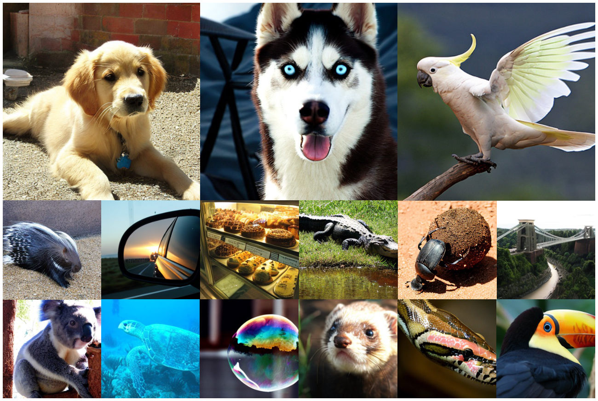
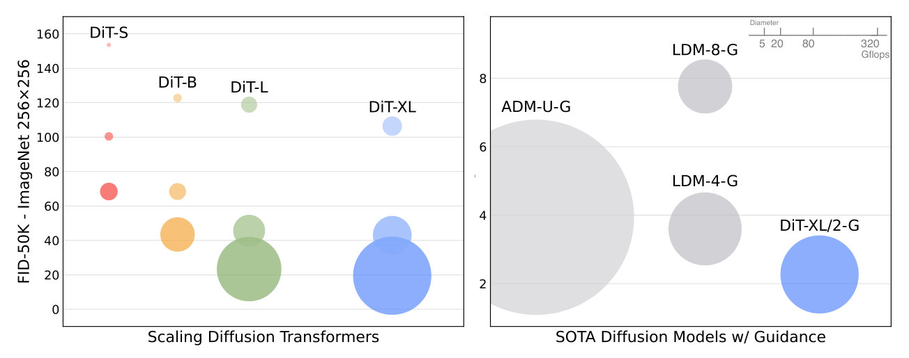
Machine learning is experiencing a renaissance powered by transformers. Over the past five years, neural architectures for natural language processing [42, 8], vision [10] and several other domains have largely been subsumed by transformers [60]. Many classes of image-level generative models remain holdouts to the trend, though—while transformers see widespread use in autoregressive models [43, 3, 6, 47], they have seen less adoption in other generative modeling frameworks. For example, diffusion models have been at the forefront of recent advances in image-level generative models [9, 46]; yet, they all adopt a convolutional U-Net architecture as the de-facto choice of backbone.
机器学习正在经历一场由 Transformer 推动的复兴。过去五年里，自然语言处理 [42, 8]、视觉 [10] 以及其他若干领域的神经网络结构，大多已被 Transformer 取代 [60]。不过，许多图像级生成模型还没有顺应这一趋势：Transformer 在自回归模型中应用广泛 [43, 3, 6, 47]，在其他生成建模框架中却用得较少。例如，扩散模型处于近期图像级生成模型进展的前沿 [9, 46]，但它们都把卷积 U-Net 结构作为事实上的默认骨干。
The seminal work of Ho et al. [19] first introduced the U-Net backbone for diffusion models. Having initially seen success within pixel-level autoregressive models and conditional GANs [23], the U-Net was inherited from PixelCNN++ [52, 58] with a few changes. The model is convolutional, comprised primarily of ResNet [15] blocks. In contrast to the standard U-Net [49], additional spatial self-attention blocks, which are essential components in transformers, are interspersed at lower resolutions. Dhariwal and Nichol [9] ablated several architecture choices for the U-Net, such as the use of adaptive normalization layers [40] to inject conditional information and channel counts for convolutional layers. However, the high-level design of the U-Net from Ho et al. has largely remained intact.
Ho 等人 [19] 的开创性工作首次把 U-Net 骨干引入扩散模型。U-Net 最初在像素级自回归模型和条件 GAN [23] 中取得成功，这里的 U-Net 继承自 PixelCNN++ [52, 58]，做了少量改动。该模型是卷积网络，主要由 ResNet [15] 块组成。和标准 U-Net [49] 不同的是，它在较低分辨率处穿插了额外的空间自注意力块，这是 Transformer 的关键组件。Dhariwal 和 Nichol [9] 对 U-Net 的若干结构选择做了消融实验，例如用自适应归一化层 (Adaptive Normalization Layer) [40] 注入条件信息，以及卷积层的通道数。不过，Ho 等人提出的 U-Net 的高层设计基本保持不变。
With this work, we aim to demystify the significance of architectural choices in diffusion models and offer empirical baselines for future generative modeling research. We show that the U-Net inductive bias is not crucial to the performance of diffusion models, and they can be readily replaced with standard designs such as transformers. As a result, diffusion models are well-poised to benefit from the recent trend of architecture unification—e.g., by inheriting best practices and training recipes from other domains, as well as retaining favorable properties like scalability, robustness and efficiency. A standardized architecture would also open up new possibilities for cross-domain research.
本文希望厘清结构选择对扩散模型的意义，并为后续生成建模研究提供经验基线。我们证明 U-Net 的归纳偏置对扩散模型的性能并不关键，可以直接换成 Transformer 这样的标准设计。这样一来，扩散模型有望受益于近来的结构统一趋势，例如继承其他领域的最佳实践和训练方法，同时保留可扩展性、鲁棒性和效率等优良特性。标准化的结构也会为跨领域研究带来新的可能。
In this paper, we focus on a new class of diffusion models based on transformers. We call them Diffusion Transformers, or DiTs for short. DiTs adhere to the best practices of Vision Transformers (ViTs) [10], which have been shown to scale more effectively for visual recognition than traditional convolutional networks (e.g., ResNet [15]).
本文关注一类基于 Transformer 的新扩散模型，我们称之为扩散 Transformer (Diffusion Transformer)，简称 DiT。DiT 遵循 Vision Transformer (ViT) [10] 的最佳实践，ViT 在视觉识别上的扩展效果已被证明优于传统卷积网络（如 ResNet [15]）。
More specifically, we study the scaling behavior of transformers with respect to network complexity vs. sample quality. We show that by constructing and benchmarking the DiT design space under the Latent Diffusion Models (LDMs) [48] framework, where diffusion models are trained within a VAE’s latent space, we can successfully replace the U-Net backbone with a transformer. We further show that DiTs are scalable architectures for diffusion models: there is a strong correlation between the network complexity (measured by Gflops) vs. sample quality (measured by FID). By simply scaling-up DiT and training an LDM with a high-capacity backbone (118.6 Gflops), we are able to achieve a state-of-the-art result of 2.27 FID on the class-conditional ImageNet generation benchmark.
具体来说，我们研究 Transformer 在网络复杂度与样本质量之间的缩放规律。我们在 Latent Diffusion Models (LDM) [48] 框架（扩散模型在 VAE 的隐空间中训练）下构建并评测 DiT 的设计空间，证明可以成功地用 Transformer 替换 U-Net 骨干。我们进一步证明 DiT 是扩散模型的可扩展结构：网络复杂度（用 Gflops 衡量）和样本质量（用 FID 衡量）之间有很强的相关性。只需扩大 DiT，用高容量骨干（118.6 Gflops）训练 LDM，就能在类别条件的 ImageNet 生成基准上取得当前最好的 FID 2.27。
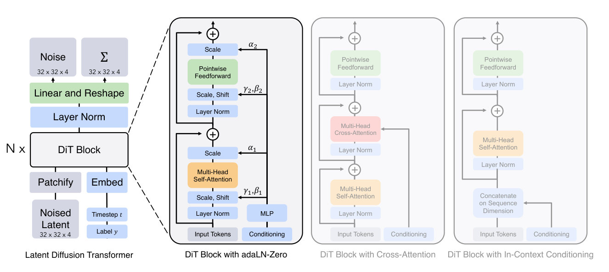
Transformers [60] have replaced domain-specific architectures across language, vision [10], reinforcement learning [5, 25] and meta-learning [39]. They have shown remarkable scaling properties under increasing model size, training compute and data in the language domain [26], as generic autoregressive models [17] and as ViTs [63]. Beyond language, transformers have been trained to autoregressively predict pixels [38, 7, 6]. They have also been trained on discrete codebooks [59] as both autoregressive models [11, 47] and masked generative models [4, 14]; the former has shown excellent scaling behavior up to 20B parameters [62]. Finally, transformers have been explored in DDPMs to synthesize non-spatial data; e.g., to generate CLIP image embeddings in DALLE 2 [46, 41]. In this paper, we study the scaling properties of transformers when used as the backbone of diffusion models of images.
Transformer [60] 已经在语言、视觉 [10]、强化学习 [5, 25] 和元学习 [39] 等领域取代了专用结构。在语言领域 [26]、作为通用自回归模型 [17] 以及作为 ViT [63] 时，它们都随模型规模、训练算力和数据量的增长表现出出色的扩展性。在语言之外，Transformer 也被训练来自回归地预测像素 [38, 7, 6]。它们还在离散码本 [59] 上训练，既作为自回归模型 [11, 47]，也作为掩码生成模型 [4, 14]；前者在参数量达到 200 亿时仍有出色的扩展表现 [62]。最后，Transformer 也被用于 DDPM 来合成非空间数据，例如在 DALLE 2 中生成 CLIP 图像嵌入 [46, 41]。本文研究 Transformer 作为图像扩散模型骨干时的扩展性质。
Diffusion [54, 19] and score-based generative models [22, 56] have been particularly successful as generative models of images [35, 46, 50, 48], in many cases outperforming generative adversarial networks (GANs) [12] which had previously been state-of-the-art. Improvements in DDPMs over the past two years have largely been driven by improved sampling techniques [19, 55, 27], most notably classifier-free guidance [21], reformulating diffusion models to predict noise instead of pixels [19] and using cascaded DDPM pipelines where low-resolution base diffusion models are trained in parallel with upsamplers [20, 9]. For all the diffusion models listed above, convolutional U-Nets [49] are the de-facto choice of backbone architecture. Concurrent work [24] introduced a novel, efficient architecture based on attention for DDPMs; we explore pure transformers.
扩散模型 [54, 19] 和基于分数的生成模型 [22, 56] 作为图像生成模型特别成功 [35, 46, 50, 48]，在许多场合超过了此前处于最高水平的生成对抗网络 (GAN) [12]。过去两年 DDPM 的改进主要来自更好的采样技术 [19, 55, 27]，其中最突出的是无分类器引导 [21]、把扩散模型改为预测噪声而非像素 [19]，以及级联 DDPM 流水线（低分辨率基础扩散模型和上采样模型并行训练）[20, 9]。对上面列出的所有扩散模型，卷积 U-Net [49] 都是事实上的默认骨干。同期工作 [24] 提出了一种基于注意力的新型高效 DDPM 结构；我们研究的是纯 Transformer。
When evaluating architecture complexity in the image generation literature, it is fairly common practice to use parameter counts. In general, parameter counts can be poor proxies for the complexity of image models since they do not account for, e.g., image resolution which significantly impacts performance [44, 45]. Instead, much of the model complexity analysis in this paper is through the lens of theoretical Gflops. This brings us in-line with the architecture design literature where Gflops are widely-used to gauge complexity. In practice, the golden complexity metric is still up for debate as it frequently depends on particular application scenarios. Nichol and Dhariwal’s seminal work improving diffusion models [36, 9] is most related to us—there, they analyzed the scalability and Gflop properties of the U-Net architecture class. In this paper, we focus on the transformer class.
在图像生成文献中评估结构复杂度时，通常使用参数量。总的来说，参数量不是衡量图像模型复杂度的好指标，因为它没有考虑图像分辨率等对性能影响很大的因素 [44, 45]。本文的模型复杂度分析大多采用理论 Gflops。这与结构设计文献一致，那里普遍用 Gflops 衡量复杂度。实践中，最合适的复杂度指标仍有争议，它常常取决于具体的应用场景。Nichol 和 Dhariwal 改进扩散模型的开创性工作 [36, 9] 和本文最相关，他们分析了 U-Net 结构类的可扩展性和 Gflop 性质。本文关注 Transformer 结构类。
Before introducing our architecture, we briefly review some basic concepts needed to understand diffusion models (DDPMs) [54, 19]. Gaussian diffusion models assume a forward noising process which gradually applies noise to real data : , where constants are hyperparameters. By applying the reparameterization trick, we can sample , where .
在介绍结构之前，先简要回顾理解扩散模型 (DDPM) [54, 19] 需要的基本概念。高斯扩散模型假设有一个前向加噪过程，逐步向真实数据 添加噪声：，其中常数 是超参数。应用重参数化技巧，可以采样 ，其中 。
Diffusion models are trained to learn the reverse process that inverts forward process corruptions: , where neural networks are used to predict the statistics of . The reverse process model is trained with the variational lower bound [30] of the log-likelihood of , which reduces to , excluding an additional term irrelevant for training. Since both and are Gaussian, can be evaluated with the mean and covariance of the two distributions. By reparameterizing as a noise prediction network , the model can be trained using simple mean-squared error between the predicted noise and the ground truth sampled Gaussian noise : . But, in order to train diffusion models with a learned reverse process covariance , the full term needs to be optimized. We follow Nichol and Dhariwal’s approach [36]: train with , and train with the full . Once is trained, new images can be sampled by initializing and sampling via the reparameterization trick.
扩散模型的训练目标是学习反转前向过程破坏的反向过程：，其中用神经网络预测 的统计量。反向过程模型用 对数似然的变分下界 [30] 训练，它化简为 ，这里省略了一个与训练无关的项。由于 和 都是高斯分布， 可以用两个分布的均值和协方差计算。把 重参数化为噪声预测网络 后，模型可以用预测噪声 和采样得到的真实高斯噪声 之间的简单均方误差训练：。但要训练带可学习反向过程协方差 的扩散模型，需要优化完整的 项。我们采用 Nichol 和 Dhariwal 的做法 [36]：用 训练 ，用完整的 训练 。 训练好之后，新图像的采样方式是：初始化 ，再通过重参数化技巧采样 。
Conditional diffusion models take extra information as input, such as a class label . In this case, the reverse process becomes , where and are conditioned on . In this setting, classifier-free guidance can be used to encourage the sampling procedure to find such that is high [21]. By Bayes Rule, , and hence . By interpreting the output of diffusion models as the score function, the DDPM sampling procedure can be guided to sample with high by: , where indicates the scale of the guidance (note that recovers standard sampling). Evaluating the diffusion model with is done by randomly dropping out during training and replacing it with a learned “null” embedding . Classifier-free guidance is widely-known to yield significantly improved samples over generic sampling techniques [21, 35, 46], and the trend holds for our DiT models.
条件扩散模型接收额外信息作为输入，比如类别标签 。此时反向过程变为 ，其中 和 以 为条件。在这种设定下，无分类器引导可以促使采样过程找到使 较高的 [21]。由贝叶斯公式，，因此 。把扩散模型的输出解释为分数函数后，可以通过下式引导 DDPM 采样，使采样得到的 具有较高的 ：，其中 表示引导的强度（注意 时恢复为标准采样）。计算 时的扩散模型，做法是在训练时随机丢弃 ，替换为一个可学习的「空」嵌入 。众所周知，无分类器引导得到的样本明显优于一般的采样技术 [21, 35, 46]，这一趋势对我们的 DiT 模型同样成立。
Training diffusion models directly in high-resolution pixel space can be computationally prohibitive. Latent diffusion models (LDMs) [48] tackle this issue with a two-stage approach: (1) learn an autoencoder that compresses images into smaller spatial representations with a learned encoder ; (2) train a diffusion model of representations instead of a diffusion model of images ( is frozen). New images can then be generated by sampling a representation from the diffusion model and subsequently decoding it to an image with the learned decoder .
在高分辨率像素空间直接训练扩散模型，计算量可能大到无法承受。隐空间扩散模型 (LDM) [48] 用两阶段方法解决这个问题：(1) 学习一个自编码器，用学到的编码器 把图像压缩成较小的空间表示；(2) 训练表示 的扩散模型，而不是图像 的扩散模型（ 固定不变）。生成新图像时，从扩散模型采样一个表示 ，再用学到的解码器解码成图像 。
As shown in Figure 2, LDMs achieve good performance while using a fraction of the Gflops of pixel space diffusion models like ADM. Since we are concerned with compute efficiency, this makes them an appealing starting point for architecture exploration. In this paper, we apply DiTs to latent space, although they could be applied to pixel space without modification as well. This makes our image generation pipeline a hybrid-based approach; we use off-the-shelf convolutional VAEs and transformer-based DDPMs.
如图 2 所示，LDM 只用像素空间扩散模型（如 ADM）一小部分的 Gflops 就能取得良好性能。我们关心计算效率，因此 LDM 是探索结构的合适起点。本文把 DiT 用在隐空间，不过它也可以不加修改地用在像素空间。这使我们的图像生成流水线成为一种混合方法：使用现成的卷积 VAE 和基于 Transformer 的 DDPM。
We introduce Diffusion Transformers (DiTs), a new architecture for diffusion models. We aim to be as faithful to the standard transformer architecture as possible to retain its scaling properties. Since our focus is training DDPMs of images (specifically, spatial representations of images), DiT is based on the Vision Transformer (ViT) architecture which operates on sequences of patches [10]. DiT retains many of the best practices of ViTs. Figure 3 shows an overview of the complete DiT architecture. In this section, we describe the forward pass of DiT, as well as the components of the design space of the DiT class.
我们提出扩散 Transformer (DiT)，一种新的扩散模型结构。我们尽可能贴近标准 Transformer 结构，以保留它的扩展性质。因为我们关注的是训练图像（具体说是图像的空间表示）的 DDPM，所以 DiT 基于 Vision Transformer (ViT) 结构，它处理的是图块序列 [10]。DiT 保留了 ViT 的许多最佳实践。图 3 给出完整 DiT 结构的概览。本节描述 DiT 的前向计算，以及 DiT 类设计空间的各个组成部分。
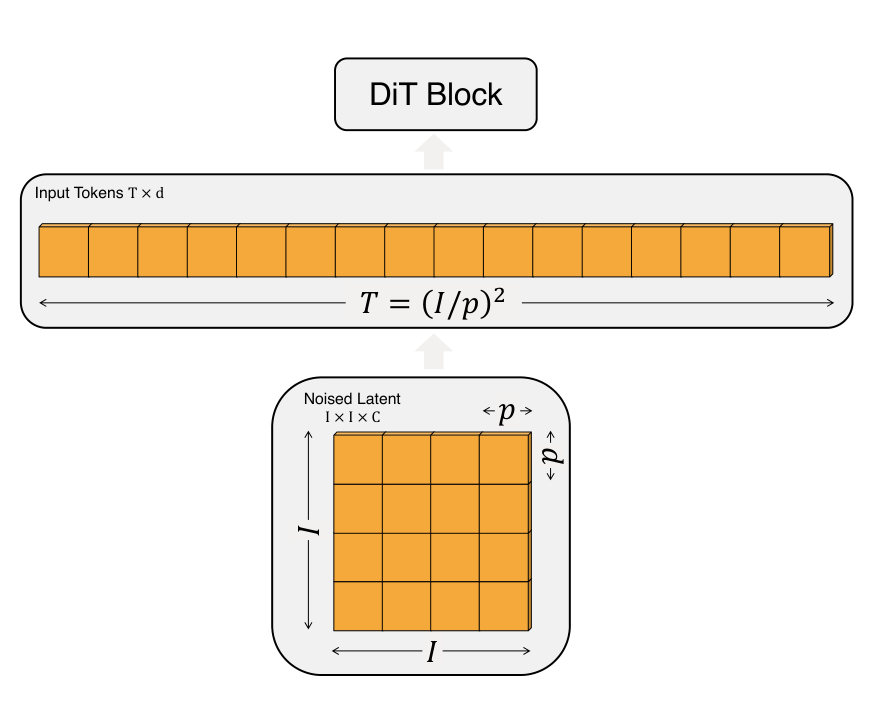
The input to DiT is a spatial representation (for images, has shape ). The first layer of DiT is “patchify,” which converts the spatial input into a sequence of tokens, each of dimension , by linearly embedding each patch in the input. Following patchify, we apply standard ViT frequency-based positional embeddings (the sine-cosine version) to all input tokens. The number of tokens created by patchify is determined by the patch size hyperparameter . As shown in Figure 4, halving will quadruple , and thus at least quadruple total transformer Gflops. Although it has a significant impact on Gflops, note that changing has no meaningful impact on downstream parameter counts.
DiT 的输入是空间表示 （对 的图像， 的形状是 ）。DiT 的第一层是 patchify，它对输入的每个图块做线性嵌入，把空间输入转换成 个 维 token 组成的序列。patchify 之后，我们给所有输入 token 加上标准的 ViT 频率位置编码（正余弦版本）。patchify 产生的 token 数 由图块大小超参数 决定。如图 4 所示， 减半会使 变成 4 倍，Transformer 的总 Gflops 也至少变成 4 倍。虽然对 Gflops 影响很大，但改变 对后续的参数量没有实质影响。
We add to the DiT design space.
我们把 加入 DiT 设计空间。
Following patchify, the input tokens are processed by a sequence of transformer blocks. In addition to noised image inputs, diffusion models sometimes process additional conditional information such as noise timesteps , class labels , natural language, etc. We explore four variants of transformer blocks that process conditional inputs differently. The designs introduce small, but important, modifications to the standard ViT block design. The designs of all blocks are shown in Figure 3.
patchify 之后，输入 token 由一串 Transformer 块处理。除了加噪的图像输入，扩散模型有时还要处理额外的条件信息，比如噪声时间步 、类别标签 、自然语言等。我们研究了四种以不同方式处理条件输入的 Transformer 块变体。这些设计对标准 ViT 块做了微小但重要的修改。所有块的设计见图 3。
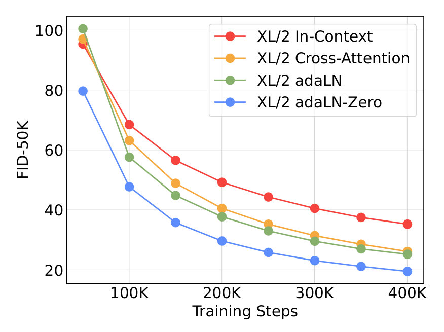
In-context conditioning. We simply append the vector embeddings of and as two additional tokens in the input sequence, treating them no differently from the image tokens. This is similar to cls tokens in ViTs, and it allows us to use standard ViT blocks without modification. After the final block, we remove the conditioning tokens from the sequence. This approach introduces negligible new Gflops to the model.
In-context 条件。我们直接把 和 的向量嵌入作为两个额外 token 追加到输入序列中，和图像 token 同等对待。这类似于 ViT 的 cls token，可以不加修改地使用标准 ViT 块。在最后一个块之后，我们把条件 token 从序列中移除。这种做法给模型增加的 Gflops 可以忽略。
Cross-attention block. We concatenate the embeddings of and into a length-two sequence, separate from the image token sequence. The transformer block is modified to include an additional multi-head cross-attention layer following the multi-head self-attention block, similar to the original design from Vaswani et al. [60], and also similar to the one used by LDM for conditioning on class labels. Cross-attention adds the most Gflops to the model, roughly a 15% overhead.
交叉注意力块。我们把 和 的嵌入拼接成长度为 2 的序列，与图像 token 序列分开。Transformer 块被修改为在多头自注意力块之后增加一个多头交叉注意力层，这和 Vaswani 等人的原始设计 [60] 类似，也和 LDM 接入类别标签时使用的设计类似。交叉注意力给模型增加的 Gflops 最多，开销约 15%。
Adaptive layer norm (adaLN) block. Following the widespread usage of adaptive normalization layers [40] in GANs [2, 28] and diffusion models with U-Net backbones [9], we explore replacing standard layer norm layers in transformer blocks with adaptive layer norm (adaLN). Rather than directly learn dimension-wise scale and shift parameters and , we regress them from the sum of the embedding vectors of and . Of the three block designs we explore, adaLN adds the least Gflops and is thus the most compute-efficient. It is also the only conditioning mechanism that is restricted to apply the same function to all tokens.
自适应层归一化 (adaLN) 块。自适应归一化层 [40] 已在 GAN [2, 28] 和采用 U-Net 骨干的扩散模型 [9] 中广泛使用。沿着这一做法，我们尝试把 Transformer 块中的标准层归一化换成自适应层归一化 (adaLN)。我们不直接学习按维度的缩放和平移参数 和 ，而是从 和 的嵌入向量之和回归得到它们。在我们研究的三种块设计中，adaLN 增加的 Gflops 最少，因此计算效率最高。它也是唯一一种限制为对所有 token 应用相同函数的条件机制。
adaLN-Zero block. Prior work on ResNets has found that initializing each residual block as the identity function is beneficial. For example, Goyal et al. found that zero-initializing the final batch norm scale factor in each block accelerates large-scale training in the supervised learning setting [13]. Diffusion U-Net models use a similar initialization strategy, zero-initializing the final convolutional layer in each block prior to any residual connections. We explore a modification of the adaLN DiT block which does the same. In addition to regressing and , we also regress dimension-wise scaling parameters that are applied immediately prior to any residual connections within the DiT block. We initialize the MLP to output the zero-vector for all ; this initializes the full DiT block as the identity function. As with the vanilla adaLN block, adaLN-Zero adds negligible Gflops to the model.
adaLN-Zero 块。此前关于 ResNet 的工作发现，把每个残差块初始化为恒等函数是有益的。例如，Goyal 等人发现，把每个块中最后一个 Batch Normalization 的缩放因子 初始化为零，可以加速监督学习场景下的大规模训练 [13]。扩散 U-Net 模型使用类似的初始化策略，把每个块中残差连接之前的最后一个卷积层初始化为零。我们尝试对 adaLN DiT 块做同样的修改。除了回归 和 ，我们还回归按维度的缩放参数 ，它们在 DiT 块内任何残差连接之前立即应用。我们初始化 MLP，使其对所有 输出零向量，这样整个 DiT 块被初始化为恒等函数。和普通 adaLN 块一样，adaLN-Zero 给模型增加的 Gflops 可以忽略。
We include the in-context, cross-attention, adaptive layer norm and adaLN-Zero blocks in the DiT design space.
我们把 in-context、交叉注意力、自适应层归一化和 adaLN-Zero 四种块加入 DiT 设计空间。
| Model | Layers | Hidden size | Heads | Gflops (=32, =4) |
|---|---|---|---|---|
| DiT-S | 12 | 384 | 6 | 1.4 |
| DiT-B | 12 | 768 | 12 | 5.6 |
| DiT-L | 24 | 1024 | 16 | 19.7 |
| DiT-XL | 28 | 1152 | 16 | 29.1 |
We apply a sequence of DiT blocks, each operating at the hidden dimension size . Following ViT, we use standard transformer configs that jointly scale , and attention heads [10, 63]. Specifically, we use four configs: DiT-S, DiT-B, DiT-L and DiT-XL. They cover a wide range of model sizes and flop allocations, from 0.3 to 118.6 Gflops, allowing us to gauge scaling performance. Table 1 gives details of the configs.
我们使用 个 DiT 块组成的序列，每个块都工作在隐藏维度 上。沿用 ViT，我们采用同时缩放 、 和注意力头数的标准 Transformer 配置 [10, 63]。具体使用四种配置：DiT-S、DiT-B、DiT-L 和 DiT-XL。它们覆盖了很宽的模型规模和计算量范围，从 0.3 到 118.6 Gflops，可以用来评估扩展性能。表 1 给出了配置的细节。
We add B, S, L and XL configs to the DiT design space.
我们把 B、S、L 和 XL 配置加入 DiT 设计空间。
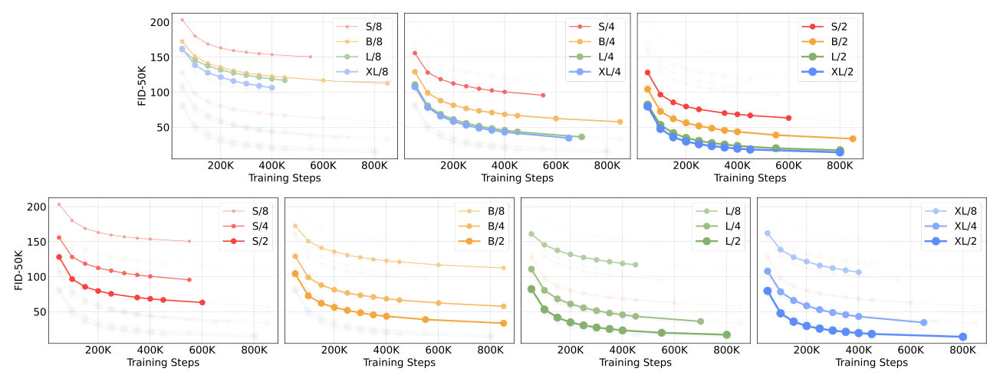
After the final DiT block, we need to decode our sequence of image tokens into an output noise prediction and an output diagonal covariance prediction. Both of these outputs have shape equal to the original spatial input. We use a standard linear decoder to do this; we apply the final layer norm (adaptive if using adaLN) and linearly decode each token into a tensor, where is the number of channels in the spatial input to DiT. Finally, we rearrange the decoded tokens into their original spatial layout to get the predicted noise and covariance.
在最后一个 DiT 块之后，我们需要把图像 token 序列解码成输出的噪声预测和对角协方差预测。这两个输出的形状都和原始空间输入相同。我们用标准的线性解码器完成这一步：应用最后的层归一化（使用 adaLN 时为自适应版本），把每个 token 线性解码成 的张量，其中 是 DiT 空间输入的通道数。最后把解码后的 token 重排回原来的空间布局，得到预测的噪声和协方差。
The complete DiT design space we explore is patch size, transformer block architecture and model size.
我们研究的完整 DiT 设计空间是图块大小、Transformer 块结构和模型规模。
We explore the DiT design space and study the scaling properties of our model class. Our models are named according to their configs and latent patch sizes ; for example, DiT-XL/2 refers to the XLarge config and .
我们探索 DiT 设计空间，研究这类模型的扩展性质。模型按配置和隐空间图块大小 命名，例如 DiT-XL/2 表示 XLarge 配置且 。
We train class-conditional latent DiT models at and image resolution on the ImageNet dataset [31], a highly-competitive generative modeling benchmark. We initialize the final linear layer with zeros and otherwise use standard weight initialization techniques from ViT. We train all models with AdamW [33, 29]. We use a constant learning rate of , no weight decay and a batch size of 256. The only data augmentation we use is horizontal flips. Unlike much prior work with ViTs [57, 61], we did not find learning rate warmup nor regularization necessary to train DiTs to high performance. Even without these techniques, training was highly stable across all model configs and we did not observe any loss spikes commonly seen when training transformers. Following common practice in the generative modeling literature, we maintain an exponential moving average (EMA) of DiT weights over training with a decay of 0.9999. All results reported use the EMA model. We use identical training hyperparameters across all DiT model sizes and patch sizes. Our training hyperparameters are almost entirely retained from ADM. We did not tune learning rates, decay/warm-up schedules, Adam / or weight decays.
我们在 ImageNet 数据集 [31] 上以 和 的图像分辨率训练类别条件隐空间 DiT 模型，这是竞争非常激烈的生成建模基准。最后的线性层初始化为零，其余部分使用 ViT 的标准权重初始化方法。所有模型都用 AdamW [33, 29] 训练。学习率恒定为 ，无权重衰减，批量大小 256。唯一的数据增强是水平翻转。和许多此前的 ViT 工作 [57, 61] 不同，我们发现训练 DiT 达到高性能不需要学习率预热和正则化。即使没有这些技术，所有模型配置的训练都非常稳定，也没有观察到训练 Transformer 时常见的损失尖峰。按生成建模文献的惯例，我们在训练过程中维护 DiT 权重的指数滑动平均 (Exponential Moving Average, EMA)，衰减率 0.9999。所有报告的结果都使用 EMA 模型。所有 DiT 模型规模和图块大小使用相同的训练超参数。训练超参数几乎全部沿用 ADM。我们没有调整学习率、衰减和预热策略、Adam 的 / 以及权重衰减。
We use an off-the-shelf pre-trained variational autoencoder (VAE) model [30] from Stable Diffusion [48]. The VAE encoder has a downsample factor of 8—given an RGB image with shape , has shape . Across all experiments in this section, our diffusion models operate in this -space. After sampling a new latent from our diffusion model, we decode it to pixels using the VAE decoder . We retain diffusion hyperparameters from ADM [9]; specifically, we use a linear variance schedule ranging from to , ADM’s parameterization of the covariance and their method for embedding input timesteps and labels.
我们使用 Stable Diffusion [48] 现成的预训练变分自编码器 (VAE) 模型 [30]。VAE 编码器的下采样倍数是 8：给定形状为 的 RGB 图像 ， 的形状是 。本节所有实验中，扩散模型都工作在这个 空间。从扩散模型采样得到新的隐变量后，用 VAE 解码器 解码成像素。扩散超参数沿用 ADM [9]： 的线性方差调度，范围从 到 ，以及 ADM 的协方差 参数化方式和时间步、标签的嵌入方法。
We measure scaling performance with Fréchet Inception Distance (FID) [18], the standard metric for evaluating generative models of images.
我们用 Fréchet Inception Distance (FID) [18] 衡量扩展性能，这是评估图像生成模型的标准指标。
We follow convention when comparing against prior works and report FID-50K using 250 DDPM sampling steps. FID is known to be sensitive to small implementation details [37]; to ensure accurate comparisons, all values reported in this paper are obtained by exporting samples and using ADM’s TensorFlow evaluation suite [9]. FID numbers reported in this section do not use classifier-free guidance except where otherwise stated. We additionally report Inception Score [51], sFID [34] and Precision/Recall [32] as secondary metrics.
与此前工作比较时，我们按惯例报告使用 250 步 DDPM 采样的 FID-50K。FID 对细微的实现细节很敏感 [37]；为确保比较准确，本文所有数值都通过导出样本并使用 ADM 的 TensorFlow 评估工具 [9] 得到。除非另有说明，本节报告的 FID 都没有使用无分类器引导。我们还报告 Inception Score [51]、sFID [34] 和 Precision/Recall [32] 作为辅助指标。
We implement all models in JAX [1] and train them using TPU-v3 pods. DiT-XL/2, our most compute-intensive model, trains at roughly 5.7 iterations/second on a TPU v3-256 pod with a global batch size of 256.
所有模型用 JAX [1] 实现，在 TPU-v3 集群上训练。计算量最大的模型 DiT-XL/2 在 TPU v3-256 集群上以全局批量 256 训练，速度约每秒 5.7 次迭代。
We train four of our highest Gflop DiT-XL/2 models, each using a different block design—in-context (119.4 Gflops), cross-attention (137.6 Gflops), adaptive layer norm (adaLN, 118.6 Gflops) or adaLN-zero (118.6 Gflops). We measure FID over the course of training. Figure 5 shows the results. The adaLN-Zero block yields lower FID than both cross-attention and in-context conditioning while being the most compute-efficient. At 400K training iterations, the FID achieved with the adaLN-Zero model is nearly half that of the in-context model, demonstrating that the conditioning mechanism critically affects model quality. Initialization is also important—adaLN-Zero, which initializes each DiT block as the identity function, significantly outperforms vanilla adaLN. For the rest of the paper, all models will use adaLN-Zero DiT blocks.
我们训练四个 Gflops 最高的 DiT-XL/2 模型，各自使用不同的块设计：in-context（119.4 Gflops）、交叉注意力（137.6 Gflops）、自适应层归一化（adaLN，118.6 Gflops）和 adaLN-Zero（118.6 Gflops）。我们在训练过程中测量 FID。结果见图 5。adaLN-Zero 块的 FID 低于交叉注意力和 in-context 条件，同时计算效率最高。在 40 万次训练迭代时，adaLN-Zero 模型的 FID 接近 in-context 模型的一半，说明条件机制对模型质量有决定性影响。初始化同样重要：把每个 DiT 块初始化为恒等函数的 adaLN-Zero 明显优于普通 adaLN。本文后面的所有模型都使用 adaLN-Zero DiT 块。
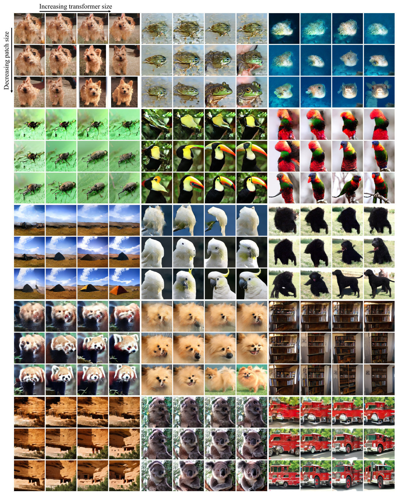
We train 12 DiT models, sweeping over model configs (S, B, L, XL) and patch sizes (8, 4, 2). Note that DiT-L and DiT-XL are significantly closer to each other in terms of relative Gflops than other configs. Figure 2 (left) gives an overview of the Gflops of each model and their FID at 400K training iterations. In all cases, we find that increasing model size and decreasing patch size yields considerably improved diffusion models.
我们训练 12 个 DiT 模型，遍历模型配置（S、B、L、XL）和图块大小（8、4、2）。注意 DiT-L 和 DiT-XL 的相对 Gflops 比其他配置之间接近得多。图 2（左）概括了各模型的 Gflops 和 40 万次训练迭代时的 FID。在所有情况下，增大模型规模和减小图块大小都能显著改善扩散模型。
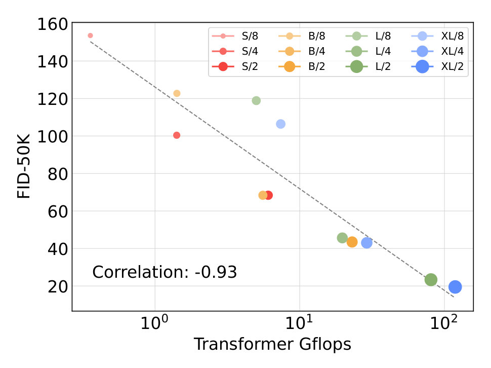
Figure 6 (top) demonstrates how FID changes as model size is increased and patch size is held constant. Across all four configs, significant improvements in FID are obtained over all stages of training by making the transformer deeper and wider. Similarly, Figure 6 (bottom) shows FID as patch size is decreased and model size is held constant. We again observe considerable FID improvements throughout training by simply scaling the number of tokens processed by DiT, holding parameters approximately fixed.
图 6（上）展示固定图块大小、增大模型规模时 FID 的变化。在全部四种配置中，把 Transformer 变得更深更宽，在训练的所有阶段都能显著改善 FID。同样，图 6（下）展示固定模型规模、减小图块大小时的 FID。我们再次观察到，只需增加 DiT 处理的 token 数，在参数量基本不变的情况下，整个训练过程的 FID 都有明显改善。
The results of Figure 6 suggest that parameter counts do not uniquely determine the quality of a DiT model. As model size is held constant and patch size is decreased, the transformer’s total parameters are effectively unchanged (actually, total parameters slightly decrease), and only Gflops are increased. These results indicate that scaling model Gflops is actually the key to improved performance. To investigate this further, we plot the FID-50K at 400K training steps against model Gflops in Figure 8. The results demonstrate that different DiT configs obtain similar FID values when their total Gflops are similar (e.g., DiT-S/2 and DiT-B/4). We find a strong negative correlation between model Gflops and FID-50K, suggesting that additional model compute is the critical ingredient for improved DiT models. In Figure 12 (appendix), we find that this trend holds for other metrics such as Inception Score.
图 6 的结果说明，参数量不能唯一决定 DiT 模型的质量。固定模型规模、减小图块大小时，Transformer 的总参数量实际上不变（严格说还略有下降），只有 Gflops 增加。这些结果表明，提升模型 Gflops 才是改善性能的关键。为进一步研究这一点，我们在图 8 中绘制了训练 40 万步时的 FID-50K 和模型 Gflops 的关系。结果表明，总 Gflops 相近时，不同 DiT 配置的 FID 也相近（如 DiT-S/2 和 DiT-B/4）。模型 Gflops 和 FID-50K 之间有很强的负相关，说明增加模型算力是改进 DiT 模型的关键因素。在图 12（附录）中，我们发现这一趋势对 Inception Score 等其他指标同样成立。
Larger DiT models are more compute-efficient. In Figure 9, we plot FID as a function of total training compute for all DiT models. We estimate training compute as model Gflops batch size training steps 3, where the factor of 3 roughly approximates the backwards pass as being twice as compute-heavy as the forward pass. We find that small DiT models, even when trained longer, eventually become compute-inefficient relative to larger DiT models trained for fewer steps. Similarly, we find that models that are identical except for patch size have different performance profiles even when controlling for training Gflops. For example, XL/4 is outperformed by XL/2 after roughly Gflops.
更大的 DiT 模型计算效率更高。图 9 绘制了所有 DiT 模型的 FID 随总训练算力的变化。我们把训练算力估计为模型 Gflops 批量大小 训练步数 3，其中系数 3 大致表示反向传播的计算量是前向计算的两倍。我们发现，小的 DiT 模型即使训练更久，最终也会比训练步数较少的大模型效率低。类似地，除图块大小外完全相同的模型，即使控制训练 Gflops，性能曲线也不同。例如，在约 Gflops 之后，XL/4 被 XL/2 超过。
We visualize the effect of scaling on sample quality in Figure 7. At 400K training steps, we sample an image from each of our 12 DiT models using identical starting noise , sampling noise and class labels. This lets us visually interpret how scaling affects DiT sample quality. Indeed, scaling both model size and the number of tokens yields notable improvements in visual quality.
我们在图 7 中展示缩放对样本质量的影响。在 40 万训练步时，我们用相同的起始噪声 、采样噪声和类别标签，从 12 个 DiT 模型各采样一张图。这样可以直观地看出缩放如何影响 DiT 的样本质量。增大模型规模和增加 token 数确实都能明显提升视觉质量。
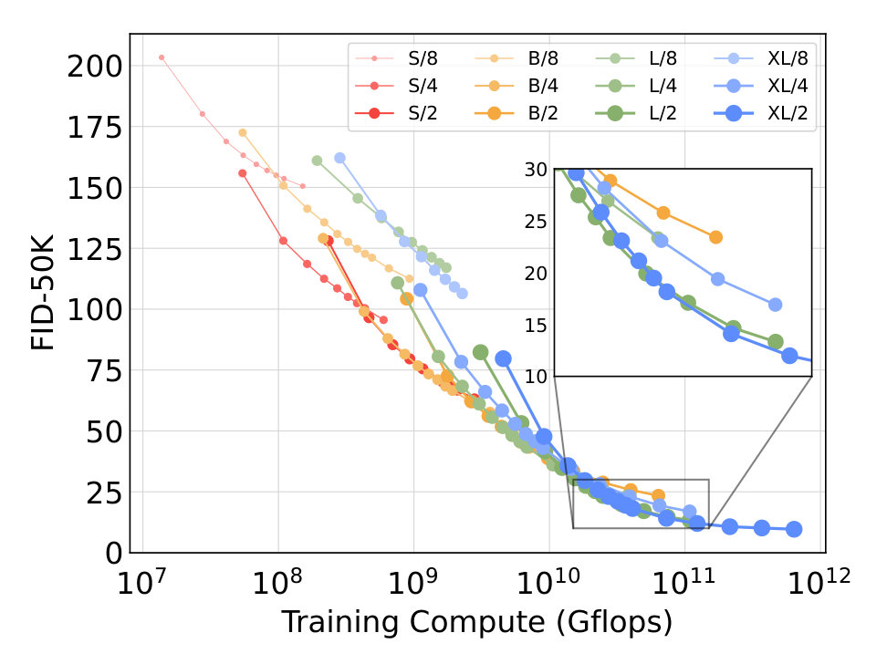
Following our scaling analysis, we continue training our highest Gflop model, DiT-XL/2, for 7M steps. We show samples from the model in Figures 1, and we compare against state-of-the-art class-conditional generative models. We report results in Table 2. When using classifier-free guidance, DiT-XL/2 outperforms all prior diffusion models, decreasing the previous best FID-50K of 3.60 achieved by LDM to 2.27. Figure 2 (right) shows that DiT-XL/2 (118.6 Gflops) is compute-efficient relative to latent space U-Net models like LDM-4 (103.6 Gflops) and substantially more efficient than pixel space U-Net models such as ADM (1120 Gflops) or ADM-U (742 Gflops). Our method achieves the lowest FID of all prior generative models, including the previous state-of-the-art StyleGAN-XL [53]. Finally, we also observe that DiT-XL/2 achieves higher recall values at all tested classifier-free guidance scales compared to LDM-4 and LDM-8. When trained for only 2.35M steps (similar to ADM), XL/2 still outperforms all prior diffusion models with an FID of 2.55.
在缩放分析之后，我们继续训练 Gflops 最高的模型 DiT-XL/2，共 700 万步。图 1 展示了模型的样本，并与当前最好的类别条件生成模型比较，结果见表 2。使用无分类器引导时，DiT-XL/2 优于此前所有扩散模型，把 LDM 此前保持的最好 FID-50K 3.60 降到 2.27。图 2（右）显示，DiT-XL/2（118.6 Gflops）相对 LDM-4（103.6 Gflops）这类隐空间 U-Net 模型计算效率较高，相对 ADM（1120 Gflops）或 ADM-U（742 Gflops）这类像素空间 U-Net 模型则高得多。我们的方法取得了此前所有生成模型中最低的 FID，包括此前最好的 StyleGAN-XL [53]。最后，在所有测试的无分类器引导强度下，DiT-XL/2 的 Recall 都高于 LDM-4 和 LDM-8。只训练 235 万步时（与 ADM 相近），XL/2 的 FID 为 2.55，仍优于此前所有扩散模型。
| Class-Conditional ImageNet 256256 | |||||
|---|---|---|---|---|---|
| Model | FID | sFID | IS | Precision | Recall |
| BigGAN-deep [2] | 6.95 | 7.36 | 171.4 | 0.87 | 0.28 |
| StyleGAN-XL [53] | 2.30 | 4.02 | 265.12 | 0.78 | 0.53 |
| ADM [9] | 10.94 | 6.02 | 100.98 | 0.69 | 0.63 |
| ADM-U | 7.49 | 5.13 | 127.49 | 0.72 | 0.63 |
| ADM-G | 4.59 | 5.25 | 186.70 | 0.82 | 0.52 |
| ADM-G, ADM-U | 3.94 | 6.14 | 215.84 | 0.83 | 0.53 |
| CDM [20] | 4.88 | - | 158.71 | - | - |
| LDM-8 [48] | 15.51 | - | 79.03 | 0.65 | 0.63 |
| LDM-8-G | 7.76 | - | 209.52 | 0.84 | 0.35 |
| LDM-4 | 10.56 | - | 103.49 | 0.71 | 0.62 |
| LDM-4-G (cfg=1.25) | 3.95 | - | 178.22 | 0.81 | 0.55 |
| LDM-4-G (cfg=1.50) | 3.60 | - | 247.67 | 0.87 | 0.48 |
| DiT-XL/2 | 9.62 | 6.85 | 121.50 | 0.67 | 0.67 |
| DiT-XL/2-G (cfg=1.25) | 3.22 | 5.28 | 201.77 | 0.76 | 0.62 |
| DiT-XL/2-G (cfg=1.50) | 2.27 | 4.60 | 278.24 | 0.83 | 0.57 |
| Class-Conditional ImageNet 512512 | |||||
|---|---|---|---|---|---|
| Model | FID | sFID | IS | Precision | Recall |
| BigGAN-deep [2] | 8.43 | 8.13 | 177.90 | 0.88 | 0.29 |
| StyleGAN-XL [53] | 2.41 | 4.06 | 267.75 | 0.77 | 0.52 |
| ADM [9] | 23.24 | 10.19 | 58.06 | 0.73 | 0.60 |
| ADM-U | 9.96 | 5.62 | 121.78 | 0.75 | 0.64 |
| ADM-G | 7.72 | 6.57 | 172.71 | 0.87 | 0.42 |
| ADM-G, ADM-U | 3.85 | 5.86 | 221.72 | 0.84 | 0.53 |
| DiT-XL/2 | 12.03 | 7.12 | 105.25 | 0.75 | 0.64 |
| DiT-XL/2-G (cfg=1.25) | 4.64 | 5.77 | 174.77 | 0.81 | 0.57 |
| DiT-XL/2-G (cfg=1.50) | 3.04 | 5.02 | 240.82 | 0.84 | 0.54 |
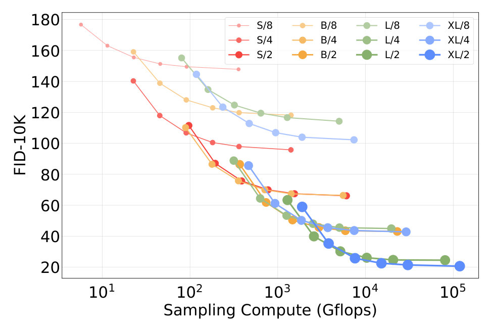
We train a new DiT-XL/2 model on ImageNet at resolution for 3M iterations with identical hyperparameters as the model. With a patch size of 2, this XL/2 model processes a total of 1024 tokens after patchifying the input latent (524.6 Gflops). Table 3 shows comparisons against state-of-the-art methods. XL/2 again outperforms all prior diffusion models at this resolution, improving the previous best FID of 3.85 achieved by ADM to 3.04. Even with the increased number of tokens, XL/2 remains compute-efficient. For example, ADM uses 1983 Gflops and ADM-U uses 2813 Gflops; XL/2 uses 524.6 Gflops. We show samples from the high-resolution XL/2 model in Figure 1 and the appendix.
我们用与 模型相同的超参数，在 分辨率的 ImageNet 上训练一个新的 DiT-XL/2 模型，共 300 万次迭代。图块大小为 2 时，这个 XL/2 模型对 的输入隐变量做 patchify 后共处理 1024 个 token（524.6 Gflops）。与当前最好方法的比较见表 3。XL/2 在这个分辨率上同样优于此前所有扩散模型，把 ADM 此前保持的最好 FID 3.85 改进到 3.04。即使 token 数增加，XL/2 仍然计算高效。例如，ADM 使用 1983 Gflops，ADM-U 使用 2813 Gflops，XL/2 使用 524.6 Gflops。高分辨率 XL/2 模型的样本见图 1 和附录。
Diffusion models are unique in that they can use additional compute after training by increasing the number of sampling steps when generating an image. Given the impact of model Gflops on sample quality, in this section we study if smaller-model compute DiTs can outperform larger ones by using more sampling compute. We compute FID for all 12 of our DiT models after 400K training steps, using [16, 32, 64, 128, 256, 1000] sampling steps per-image. The main results are in Figure 10. Consider DiT-L/2 using 1000 sampling steps versus DiT-XL/2 using 128 steps. In this case, L/2 uses Tflops to sample each image; XL/2 uses less compute— Tflops—to sample each image. Nonetheless, XL/2 has the better FID-10K (23.7 vs 25.9). In general, scaling-up sampling compute cannot compensate for a lack of model compute.
扩散模型的特殊之处在于，生成图像时可以增加采样步数，在训练之后继续投入算力。考虑到模型 Gflops 对样本质量的影响，本节研究模型算力较小的 DiT 能否通过使用更多采样算力超过较大的模型。我们对训练 40 万步后的全部 12 个 DiT 模型计算 FID，每张图使用 [16, 32, 64, 128, 256, 1000] 个采样步。主要结果见图 10。考虑用 1000 步的 DiT-L/2 和用 128 步的 DiT-XL/2。此时 L/2 采样每张图使用 Tflops；XL/2 采样每张图使用的算力比它少 ，为 Tflops。尽管如此，XL/2 的 FID-10K 更好（23.7 对 25.9）。总的来说，增加采样算力无法弥补模型算力的不足。
We introduce Diffusion Transformers (DiTs), a simple transformer-based backbone for diffusion models that outperforms prior U-Net models and inherits the excellent scaling properties of the transformer model class. Given the promising scaling results in this paper, future work should continue to scale DiTs to larger models and token counts. DiT could also be explored as a drop-in backbone for text-to-image models like DALLE 2 and Stable Diffusion.
我们提出扩散 Transformer (DiT)，一种简单的基于 Transformer 的扩散模型骨干。它优于此前的 U-Net 模型，并继承了 Transformer 这类模型出色的扩展性质。鉴于本文的缩放结果，后续工作应继续把 DiT 扩大到更大的模型和更多的 token。DiT 也可以作为即插即用的骨干，用于 DALLE 2 和 Stable Diffusion 这类文本生成图像模型。
We thank Kaiming He, Ronghang Hu, Alexander Berg, Shoubhik Debnath, Tim Brooks, Ilija Radosavovic and Tete Xiao for helpful discussions. William Peebles is supported by the NSF GRFP.
感谢 Kaiming He、Ronghang Hu、Alexander Berg、Shoubhik Debnath、Tim Brooks、Ilija Radosavovic 和 Tete Xiao 的有益讨论。William Peebles 由 NSF GRFP 资助。
| Model | Image Resolution | Flops (G) | Params (M) | Training Steps (K) | Batch Size | Learning Rate | DiT Block | FID-50K (no guidance) |
|---|---|---|---|---|---|---|---|---|
| DiT-S/8 | 0.36 | 33 | 400 | 256 | adaLN-Zero | 153.60 | ||
| DiT-S/4 | 1.41 | 33 | 400 | 256 | adaLN-Zero | 100.41 | ||
| DiT-S/2 | 6.06 | 33 | 400 | 256 | adaLN-Zero | 68.40 | ||
| DiT-B/8 | 1.42 | 131 | 400 | 256 | adaLN-Zero | 122.74 | ||
| DiT-B/4 | 5.56 | 130 | 400 | 256 | adaLN-Zero | 68.38 | ||
| DiT-B/2 | 23.01 | 130 | 400 | 256 | adaLN-Zero | 43.47 | ||
| DiT-L/8 | 5.01 | 459 | 400 | 256 | adaLN-Zero | 118.87 | ||
| DiT-L/4 | 19.70 | 458 | 400 | 256 | adaLN-Zero | 45.64 | ||
| DiT-L/2 | 80.71 | 458 | 400 | 256 | adaLN-Zero | 23.33 | ||
| DiT-XL/8 | 7.39 | 676 | 400 | 256 | adaLN-Zero | 106.41 | ||
| DiT-XL/4 | 29.05 | 675 | 400 | 256 | adaLN-Zero | 43.01 | ||
| DiT-XL/2 | 118.64 | 675 | 400 | 256 | adaLN-Zero | 19.47 | ||
| DiT-XL/2 | 119.37 | 449 | 400 | 256 | in-context | 35.24 | ||
| DiT-XL/2 | 137.62 | 598 | 400 | 256 | cross-attention | 26.14 | ||
| DiT-XL/2 | 118.56 | 600 | 400 | 256 | adaLN | 25.21 | ||
| DiT-XL/2 | 118.64 | 675 | 2352 | 256 | adaLN-Zero | 10.67 | ||
| DiT-XL/2 | 118.64 | 675 | 7000 | 256 | adaLN-Zero | 9.62 | ||
| DiT-XL/2 | 524.60 | 675 | 1301 | 256 | adaLN-Zero | 13.78 | ||
| DiT-XL/2 | 524.60 | 675 | 3000 | 256 | adaLN-Zero | 11.93 |
We include detailed information about all of our DiT models in Table 4, including both and models. In Figure 13, we report DiT training loss curves. Finally, we also include Gflop counts for DDPM U-Net models from ADM and LDM in Table 6.
表 4 给出全部 DiT 模型的详细信息，包括 和 的模型。图 13 报告 DiT 的训练损失曲线。最后，表 6 给出 ADM 和 LDM 中 DDPM U-Net 模型的 Gflop 数。
To embed input timesteps, we use a 256-dimensional frequency embedding [9] followed by a two-layer MLP with dimensionality equal to the transformer’s hidden size and SiLU activations. Each adaLN layer feeds the sum of the timestep and class embeddings into a SiLU nonlinearity and a linear layer with output neurons equal to either (adaLN) or (adaLN-Zero) the transformer’s hidden size. We use GELU nonlinearities (approximated with tanh) in the core transformer [16].
为嵌入输入时间步，我们使用 256 维频率嵌入 [9]，后接一个两层 MLP，其维度等于 Transformer 的隐藏维度，激活函数为 SiLU。每个 adaLN 层把时间步和类别嵌入之和送入 SiLU 非线性和一个线性层，线性层的输出神经元数是 Transformer 隐藏维度的 （adaLN）或 （adaLN-Zero）。Transformer 主体使用 GELU 非线性（用 tanh 近似）[16]。
In our experiments using classifier-free guidance, we applied guidance only to the first three channels of the latents instead of all four channels. Upon investigating, we found that three-channel guidance and four-channel guidance give similar results (in terms of FID) when simply adjusting the scale factor. Specifically, three-channel guidance with a scale of appears reasonably well-approximated by four-channel guidance with a scale of (e.g., three-channel guidance with a scale of gives an FID-50K of 2.27, and four-channel guidance with a scale of gives an FID-50K of 2.20). It is somewhat interesting that applying guidance to a subset of elements can still yield good performance, and we leave it to future work to explore this phenomenon further.
在使用无分类器引导的实验中，我们只对隐变量的前三个通道做引导，而不是全部四个通道。研究后发现，只要调整系数，三通道引导和四通道引导的结果（按 FID）相近。具体来说，系数为 的三通道引导大致可以用系数为 的四通道引导近似（例如，系数 的三通道引导 FID-50K 为 2.27，系数 的四通道引导 FID-50K 为 2.20）。只对部分元素做引导仍能取得良好性能，这一点值得研究，我们留给后续工作进一步探索。
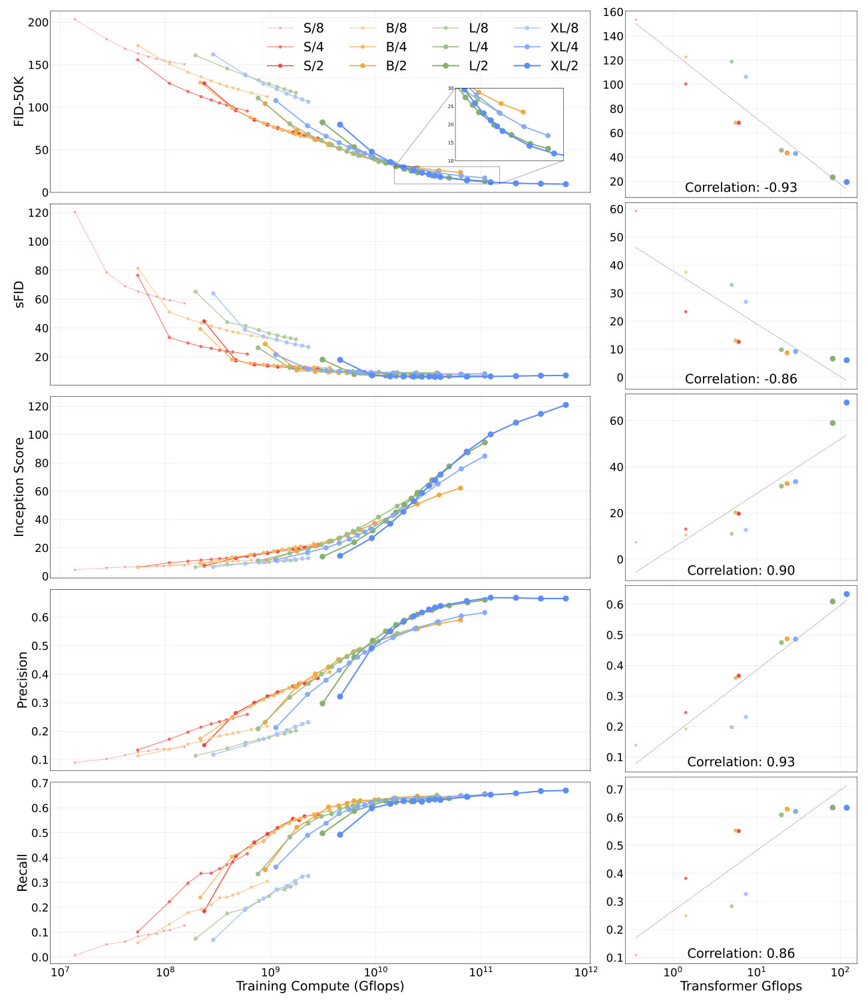
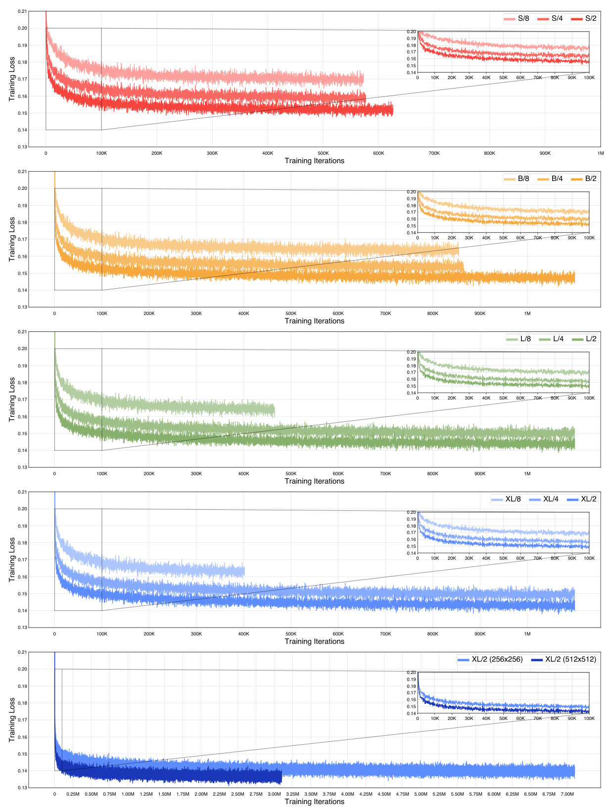
We show samples from our two DiT-XL/2 models at and resolution trained for 3M and 7M steps, respectively. Figures 1 and 11 show selected samples from both models. Figures 14 through 33 show uncurated samples from the two models across a range of classifier-free guidance scales and input class labels (generated with 250 DDPM sampling steps and the ft-EMA VAE decoder). As with prior work using guidance, we observe that larger scales increase visual fidelity and decrease sample diversity.
这里展示两个分别在 和 分辨率上训练 300 万步和 700 万步的 DiT-XL/2 模型的样本。图 1 和图 11 是两个模型挑选过的样本。图 14 到图 33 是两个模型未经挑选的样本，覆盖一系列无分类器引导系数和输入类别标签（用 250 步 DDPM 采样和 ft-EMA VAE 解码器生成）。和此前使用引导的工作一样，我们观察到系数越大，视觉保真度越高，样本多样性越低。
In Figure 12, we show the effects of DiT scale on a suite of evaluation metrics—FID, sFID, Inception Score, Precision and Recall. We find that our FID-driven analysis in the main paper generalizes to the other metrics—across every metric, scaled-up DiT models are more compute-efficient and model Gflops are highly-correlated with performance. In particular, Inception Score and Precision benefit heavily from increased model scale.
图 12 展示 DiT 规模对一组评估指标的影响：FID、sFID、Inception Score、Precision 和 Recall。我们发现正文中基于 FID 的分析可以推广到其他指标：在每个指标上，扩大后的 DiT 模型计算效率都更高，模型 Gflops 和性能都高度相关。其中 Inception Score 和 Precision 从模型规模的增加中获益最大。
We also examine the impact of scale on training loss in Figure 13. Increasing DiT model Gflops (via transformer size or number of input tokens) causes the training loss to decrease more rapidly and saturate at a lower value. This phenomenon is consistent with trends observed with language models, where scaled-up transformers demonstrate both improved loss curves as well as improved performance on downstream evaluation suites [26].
我们还在图 13 中考察规模对训练损失的影响。增加 DiT 模型的 Gflops（通过 Transformer 规模或输入 token 数）会使训练损失下降更快，并在更低的值上饱和。这一现象和语言模型观察到的趋势一致：扩大后的 Transformer 既有更好的损失曲线，在下游评估中的表现也更好 [26]。
We used off-the-shelf, pre-trained VAEs across our experiments. The VAE models (ft-MSE and ft-EMA) are fine-tuned versions of the original LDM “f8” model (only the decoder weights are fine-tuned). We monitored metrics for our scaling analysis in Section 5 using the ft-MSE decoder, and we used the ft-EMA decoder for our final metrics reported in Tables 2 and 3. In this section, we ablate three different choices of the VAE decoder; the original one used by LDM and the two fine-tuned decoders used by Stable Diffusion. Because the encoders are identical across models, the decoders can be swapped-in without retraining the diffusion model. Table 5 shows results; XL/2 continues to outperform all prior diffusion models when using the LDM decoder.
我们在实验中使用现成的预训练 VAE。VAE 模型（ft-MSE 和 ft-EMA）是原始 LDM「f8」模型的微调版本（只微调解码器权重）。第 5 节的缩放分析用 ft-MSE 解码器监测指标，表 2 和表 3 报告的最终指标用 ft-EMA 解码器。本节比较三种 VAE 解码器：LDM 使用的原版，以及 Stable Diffusion 使用的两个微调版本。由于各模型的编码器相同，可以直接替换解码器，不必重新训练扩散模型。结果见表 5；使用 LDM 解码器时，XL/2 仍然优于此前所有扩散模型。
| Class-Conditional ImageNet 256256, DiT-XL/2-G (cfg=1.5) | |||||
|---|---|---|---|---|---|
| Decoder | FID | sFID | IS | Precision | Recall |
| original | 2.46 | 5.18 | 271.56 | 0.82 | 0.57 |
| ft-MSE | 2.30 | 4.73 | 276.09 | 0.83 | 0.57 |
| ft-EMA | 2.27 | 4.60 | 278.24 | 0.83 | 0.57 |
| Diffusion U-Net Model Complexities | ||||
| Model | Image Resolution | Base Flops (G) | Upsampler Flops (G) | Total Flops (G) |
| ADM | 307 | - | 307 | |
| ADM | 1120 | - | 1120 | |
| ADM | 1983 | - | 1983 | |
| ADM-U | 110 | 632 | 742 | |
| ADM-U | 307 | 2506 | 2813 | |
| LDM-4 | 104 | - | 104 | |
| LDM-8 | 57 | - | 57 | |
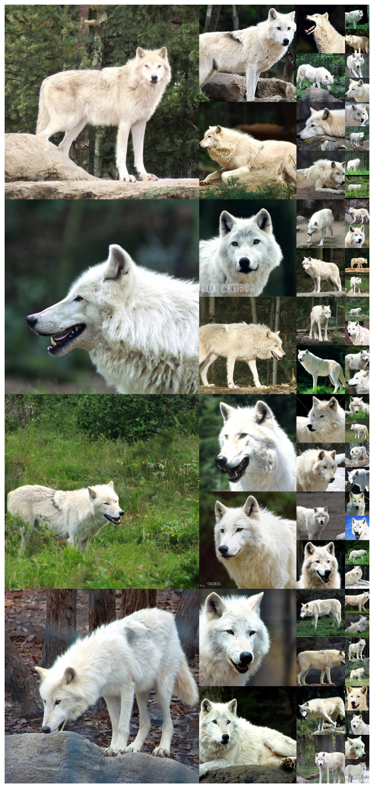
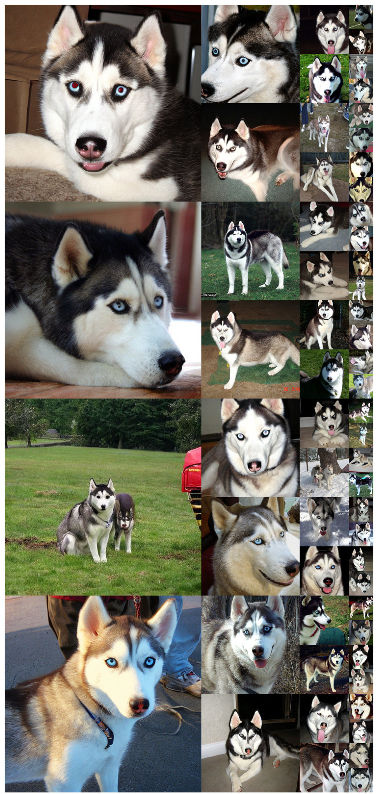
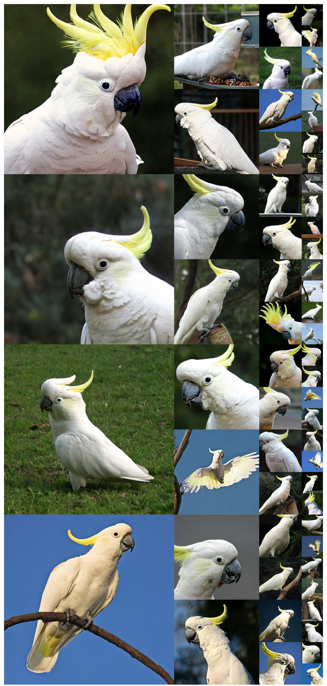
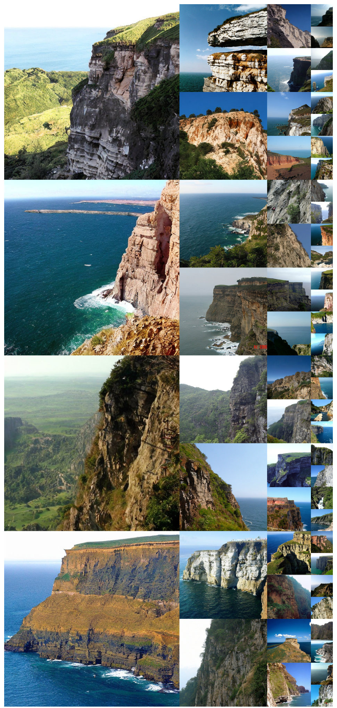
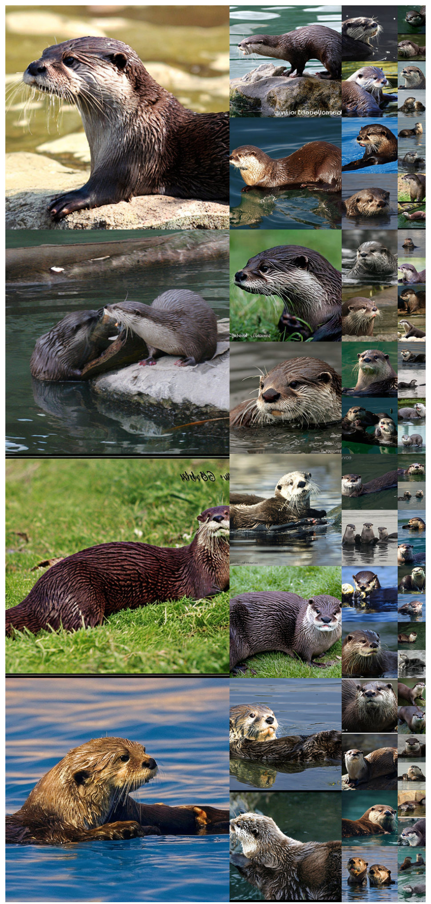
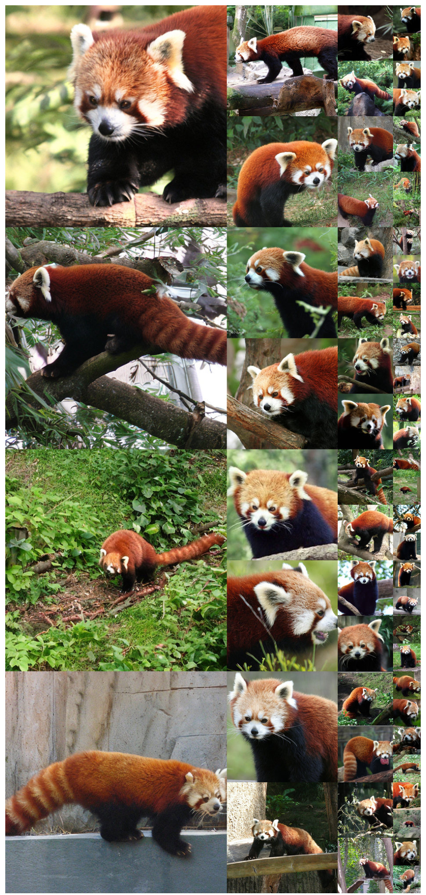
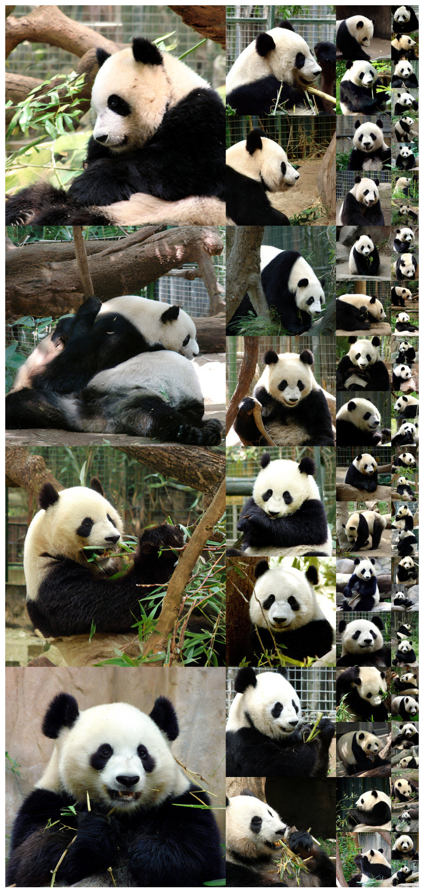
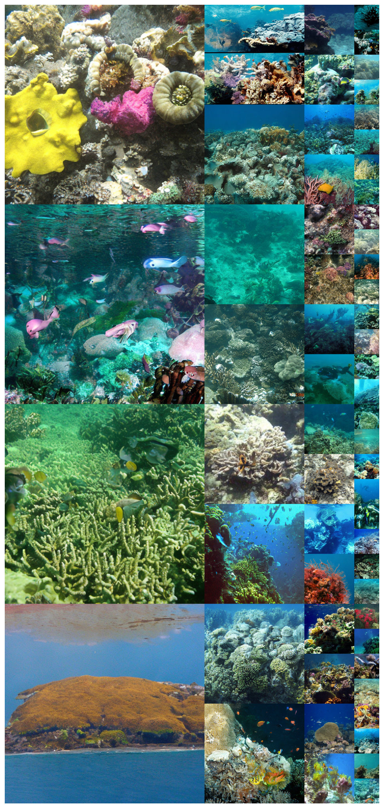
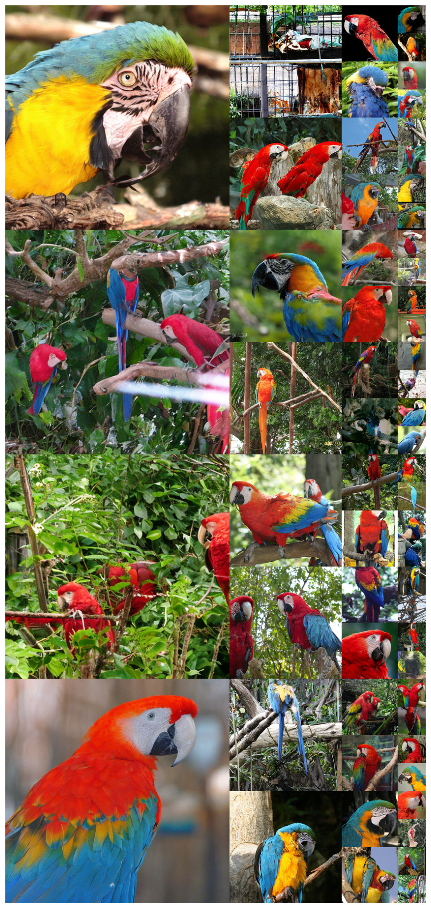
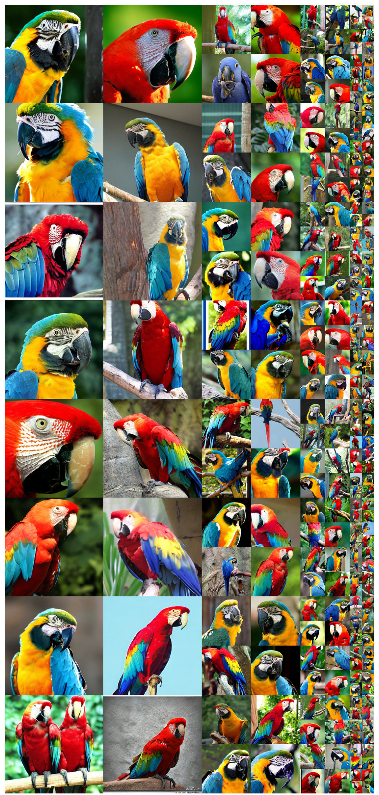
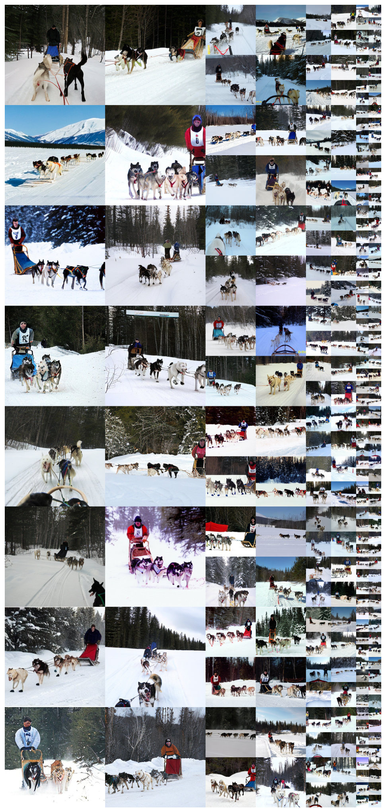
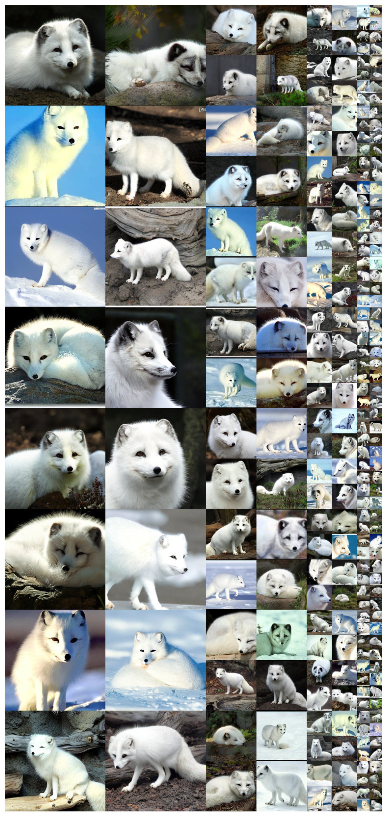
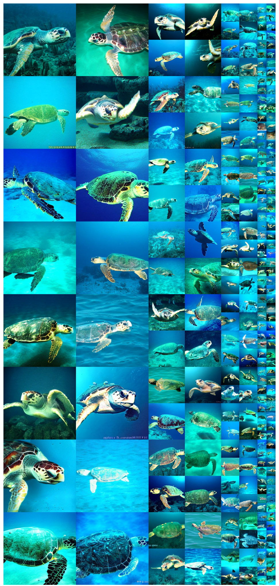
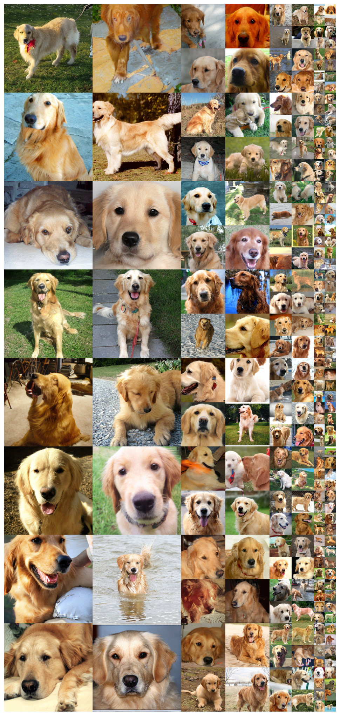
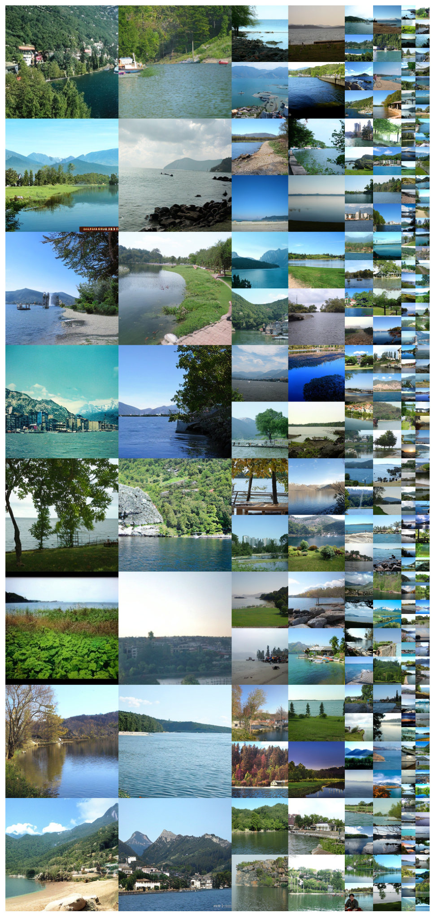
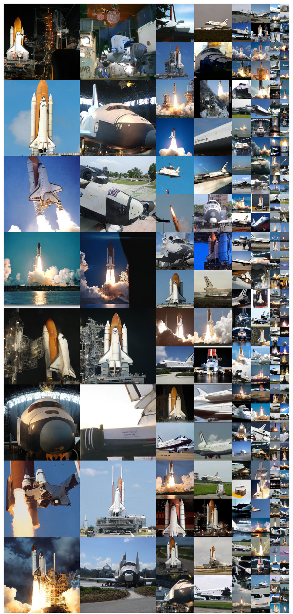
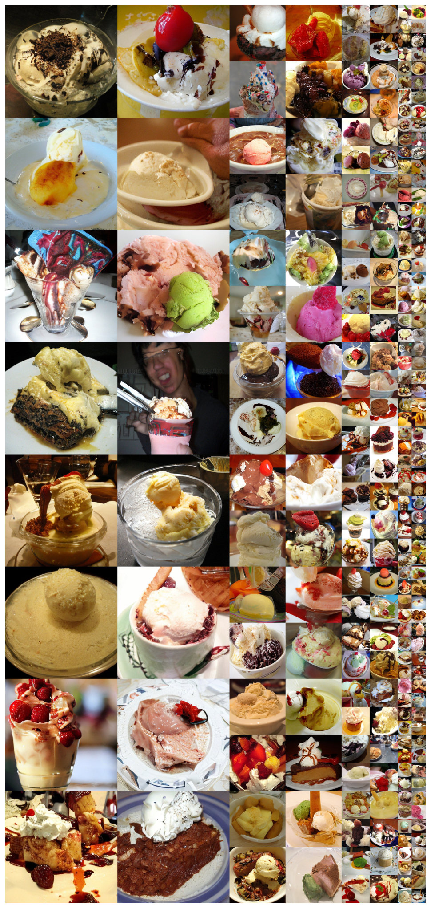
§4We implement all models in JAX [1] and train them using TPU-v3 pods.
§3.2Following the widespread usage of adaptive normalization layers [40] in GANs [2,28] and diffusion models with U-Net backbones [9] , we explore replacing standard layer norm layers in transformer blocks with adaptive layer norm (adaLN).
§5.1列在 Table 2 的对照行里
§1Many classes of image-level generative models remain holdouts to the trend, though—while transformers see widespread use in autoregressive models [43,3,6,47] , they have seen less adoption in other generative modeling frameworks.
§2They have also been trained on discrete codebooks [59] as both autoregressive models [11,47] and masked generative models [4,14] ; the former has shown excellent scaling behavior up to 20B parameters [62] .
§2Transformers [60] have replaced domain-specific architectures across language, vision [10] , reinforcement learning [5,25] and meta-learning [39] .
§1Many classes of image-level generative models remain holdouts to the trend, though—while transformers see widespread use in autoregressive models [43,3,6,47] , they have seen less adoption in other generative modeling frameworks.
§2Beyond language, transformers have been trained to autoregressively predict pixels [38,7,6] .
§2Beyond language, transformers have been trained to autoregressively predict pixels [38,7,6] .
§1Over the past five years, neural architectures for natural language processing [42,8] , vision [10] and several other domains have largely been subsumed by transformers [60] .
§1For example, diffusion models have been at the forefront of recent advances in image-level generative models [9,46] ; yet, they all adopt a convolutional U-Net architecture as the de-facto choice of backbone.
§1Dhariwal and Nichol [9] ablated several architecture choices for the U-Net, such as the use of adaptive normalization layers [40] to inject conditional information and channel counts for convolutional layers.
§2Improvements in DDPMs over the past two years have largely been driven by improved sampling techniques [19,55,27] , most notably classifier-free guidance [21] , reformulating diffusion models to predict noise instead of pixels [19] and using cascaded DDPM pipelines where low-resolution base diffusion models are trained in parallel with upsamplers [20,9] .
§2Nichol and Dhariwal’s seminal work improving diffusion models [36,9] is most related to us—there, they analyzed the scalability and Gflop properties of the U-Net architecture class.
§3.2Following the widespread usage of adaptive normalization layers [40] in GANs [2,28] and diffusion models with U-Net backbones [9] , we explore replacing standard layer norm layers in transformer blocks with adaptive layer norm (adaLN).
§4We retain diffusion hyperparameters from ADM [9] ; specifically, we use a t max = 1000 linear variance schedule ranging from 1 × 10 − 4 to 2 × 10 − 2 , ADM’s parameterization of the covariance Σ θ and their method for embedding input timesteps and labels.
§4FID is known to be sensitive to small implementation details [37] ; to ensure accurate comparisons, all values reported in this paper are obtained by exporting samples and using ADM’s TensorFlow evaluation suite [9] .
§5.1列在 Table 2 的对照行里
§Appendix ATo embed input timesteps, we use a 256-dimensional frequency embedding [9] followed by a two-layer MLP with dimensionality equal to the transformer’s hidden size and SiLU activations.
§1Over the past five years, neural architectures for natural language processing [42,8] , vision [10] and several other domains have largely been subsumed by transformers [60] .
§1DiTs adhere to the best practices of Vision Transformers (ViTs) [10] , which have been shown to scale more effectively for visual recognition than traditional convolutional networks (e.g., ResNet [15] ).
§2Transformers [60] have replaced domain-specific architectures across language, vision [10] , reinforcement learning [5,25] and meta-learning [39] .
§3.2Since our focus is training DDPMs of images (specifically, spatial representations of images), DiT is based on the Vision Transformer (ViT) architecture which operates on sequences of patches [10] .
§3.2列在 Table 1 的对照行里
§3.2Following ViT, we use standard transformer configs that jointly scale N , d and attention heads [10,63] .
§2They have also been trained on discrete codebooks [59] as both autoregressive models [11,47] and masked generative models [4,14] ; the former has shown excellent scaling behavior up to 20B parameters [62] .
§2Diffusion [54,19] and score-based generative models [22,56] have been particularly successful as generative models of images [35,46,50,48] , in many cases outperforming generative adversarial networks (GANs) [12] which had previously been state-of-the-art.
§3.2For example, Goyal et al. found that zero-initializing the final batch norm scale factor γ in each block accelerates large-scale training in the supervised learning setting [13] .
§2They have also been trained on discrete codebooks [59] as both autoregressive models [11,47] and masked generative models [4,14] ; the former has shown excellent scaling behavior up to 20B parameters [62] .
§1The model is convolutional, comprised primarily of ResNet [15] blocks.
§1DiTs adhere to the best practices of Vision Transformers (ViTs) [10] , which have been shown to scale more effectively for visual recognition than traditional convolutional networks (e.g., ResNet [15] ).
§5.1列在 Figure 10 的对照行里
§5.2We compute FID for all 12 of our DiT models after 400K training steps, using [16,32,64,128,256,1000] sampling steps per-image.
§Appendix AWe use GELU nonlinearities (approximated with tanh) in the core transformer [16] .
§2They have shown remarkable scaling properties under increasing model size, training compute and data in the language domain [26] , as generic autoregressive models [17] and as ViTs [63] .
§4We measure scaling performance with Fréchet Inception Distance (FID) [18] , the standard metric for evaluating generative models of images.
§1The seminal work of Ho et al. [19] first introduced the U-Net backbone for diffusion models.
§2Diffusion [54,19] and score-based generative models [22,56] have been particularly successful as generative models of images [35,46,50,48] , in many cases outperforming generative adversarial networks (GANs) [12] which had previously been state-of-the-art.
§2Improvements in DDPMs over the past two years have largely been driven by improved sampling techniques [19,55,27] , most notably classifier-free guidance [21] , reformulating diffusion models to predict noise instead of pixels [19] and using cascaded DDPM pipelines where low-resolution base diffusion models are trained in parallel with upsamplers [20,9] .
§3.1Before introducing our architecture, we briefly review some basic concepts needed to understand diffusion models (DDPMs) [54,19] .
§2Improvements in DDPMs over the past two years have largely been driven by improved sampling techniques [19,55,27] , most notably classifier-free guidance [21] , reformulating diffusion models to predict noise instead of pixels [19] and using cascaded DDPM pipelines where low-resolution base diffusion models are trained in parallel with upsamplers [20,9] .
§5.1列在 Table 2 的对照行里
§2Improvements in DDPMs over the past two years have largely been driven by improved sampling techniques [19,55,27] , most notably classifier-free guidance [21] , reformulating diffusion models to predict noise instead of pixels [19] and using cascaded DDPM pipelines where low-resolution base diffusion models are trained in parallel with upsamplers [20,9] .
§3.1In this setting, classifier-free guidance can be used to encourage the sampling procedure to find x such that log p ( c | x ) is high [21] .
§3.1Classifier-free guidance is widely-known to yield significantly improved samples over generic sampling techniques [21,35,46] , and the trend holds for our DiT models.
§2Diffusion [54,19] and score-based generative models [22,56] have been particularly successful as generative models of images [35,46,50,48] , in many cases outperforming generative adversarial networks (GANs) [12] which had previously been state-of-the-art.
§1Having initially seen success within pixel-level autoregressive models and conditional GANs [23] , the U-Net was inherited from PixelCNN++ [52,58] with a few changes.
§2Concurrent work [24] introduced a novel, efficient architecture based on attention for DDPMs; we explore pure transformers.
§2Transformers [60] have replaced domain-specific architectures across language, vision [10] , reinforcement learning [5,25] and meta-learning [39] .
§2They have shown remarkable scaling properties under increasing model size, training compute and data in the language domain [26] , as generic autoregressive models [17] and as ViTs [63] .
§Appendix CThis phenomenon is consistent with trends observed with language models, where scaled-up transformers demonstrate both improved loss curves as well as improved performance on downstream evaluation suites [26] .
§2Improvements in DDPMs over the past two years have largely been driven by improved sampling techniques [19,55,27] , most notably classifier-free guidance [21] , reformulating diffusion models to predict noise instead of pixels [19] and using cascaded DDPM pipelines where low-resolution base diffusion models are trained in parallel with upsamplers [20,9] .
§3.2Following the widespread usage of adaptive normalization layers [40] in GANs [2,28] and diffusion models with U-Net backbones [9] , we explore replacing standard layer norm layers in transformer blocks with adaptive layer norm (adaLN).
§4We train all models with AdamW [33,29] .
§3.1The reverse process model is trained with the variational lower bound [30] of the log-likelihood of x 0 , which reduces to ℒ ( θ ) = − p ( x 0 | x 1 ) + ∑ t 𝒟 K L ( q ∗ ( x t − 1 | x t , x 0 ) | | p θ ( x t − 1 | x t ) ) , excluding an additional term irrelevant for training.
§4We use an off-the-shelf pre-trained variational autoencoder (VAE) model [30] from Stable Diffusion [48] .
§4We train class-conditional latent DiT models at 256 × 256 and 512 × 512 image resolution on the ImageNet dataset [31] , a highly-competitive generative modeling benchmark.
§4We additionally report Inception Score [51] , sFID [34] and Precision/Recall [32] as secondary metrics.
§5.1列在 Figure 10 的对照行里
§5.2We compute FID for all 12 of our DiT models after 400K training steps, using [16,32,64,128,256,1000] sampling steps per-image.
§4We train all models with AdamW [33,29] .
§4We additionally report Inception Score [51] , sFID [34] and Precision/Recall [32] as secondary metrics.
§2Diffusion [54,19] and score-based generative models [22,56] have been particularly successful as generative models of images [35,46,50,48] , in many cases outperforming generative adversarial networks (GANs) [12] which had previously been state-of-the-art.
§3.1Classifier-free guidance is widely-known to yield significantly improved samples over generic sampling techniques [21,35,46] , and the trend holds for our DiT models.
§2Nichol and Dhariwal’s seminal work improving diffusion models [36,9] is most related to us—there, they analyzed the scalability and Gflop properties of the U-Net architecture class.
§3.1We follow Nichol and Dhariwal’s approach [36] : train ϵ θ with ℒ s i m p l e , and train Σ θ with the full ℒ .
§4FID is known to be sensitive to small implementation details [37] ; to ensure accurate comparisons, all values reported in this paper are obtained by exporting samples and using ADM’s TensorFlow evaluation suite [9] .
§2Beyond language, transformers have been trained to autoregressively predict pixels [38,7,6] .
§2Transformers [60] have replaced domain-specific architectures across language, vision [10] , reinforcement learning [5,25] and meta-learning [39] .
§1Dhariwal and Nichol [9] ablated several architecture choices for the U-Net, such as the use of adaptive normalization layers [40] to inject conditional information and channel counts for convolutional layers.
§3.2Following the widespread usage of adaptive normalization layers [40] in GANs [2,28] and diffusion models with U-Net backbones [9] , we explore replacing standard layer norm layers in transformer blocks with adaptive layer norm (adaLN).
§2Finally, transformers have been explored in DDPMs to synthesize non-spatial data; e.g., to generate CLIP image embeddings in DALL ⋅ E 2 [46,41] .
§1Over the past five years, neural architectures for natural language processing [42,8] , vision [10] and several other domains have largely been subsumed by transformers [60] .
§1Many classes of image-level generative models remain holdouts to the trend, though—while transformers see widespread use in autoregressive models [43,3,6,47] , they have seen less adoption in other generative modeling frameworks.
§2In general, parameter counts can be poor proxies for the complexity of image models since they do not account for, e.g., image resolution which significantly impacts performance [44,45] .
§2In general, parameter counts can be poor proxies for the complexity of image models since they do not account for, e.g., image resolution which significantly impacts performance [44,45] .
§1For example, diffusion models have been at the forefront of recent advances in image-level generative models [9,46] ; yet, they all adopt a convolutional U-Net architecture as the de-facto choice of backbone.
§2Finally, transformers have been explored in DDPMs to synthesize non-spatial data; e.g., to generate CLIP image embeddings in DALL ⋅ E 2 [46,41] .
§2Diffusion [54,19] and score-based generative models [22,56] have been particularly successful as generative models of images [35,46,50,48] , in many cases outperforming generative adversarial networks (GANs) [12] which had previously been state-of-the-art.
§3.1Classifier-free guidance is widely-known to yield significantly improved samples over generic sampling techniques [21,35,46] , and the trend holds for our DiT models.
§1Many classes of image-level generative models remain holdouts to the trend, though—while transformers see widespread use in autoregressive models [43,3,6,47] , they have seen less adoption in other generative modeling frameworks.
§2They have also been trained on discrete codebooks [59] as both autoregressive models [11,47] and masked generative models [4,14] ; the former has shown excellent scaling behavior up to 20B parameters [62] .
§1We show that by constructing and benchmarking the DiT design space under the Latent Diffusion Models (LDMs) [48] framework, where diffusion models are trained within a VAE’s latent space, we can successfully replace the U-Net backbone with a transformer.
§2Diffusion [54,19] and score-based generative models [22,56] have been particularly successful as generative models of images [35,46,50,48] , in many cases outperforming generative adversarial networks (GANs) [12] which had previously been state-of-the-art.
§3.1Latent diffusion models (LDMs) [48] tackle this issue with a two-stage approach: (1) learn an autoencoder that compresses images into smaller spatial representations with a learned encoder E ; (2) train a diffusion model of representations z = E ( x ) instead of a diffusion model of images x ( E is frozen).
§4We use an off-the-shelf pre-trained variational autoencoder (VAE) model [30] from Stable Diffusion [48] .
§5.1列在 Table 2 的对照行里
§1In contrast to the standard U-Net [49] , additional spatial self-attention blocks, which are essential components in transformers, are interspersed at lower resolutions.
§2For all the diffusion models listed above, convolutional U-Nets [49] are the de-facto choice of backbone architecture.
§2Diffusion [54,19] and score-based generative models [22,56] have been particularly successful as generative models of images [35,46,50,48] , in many cases outperforming generative adversarial networks (GANs) [12] which had previously been state-of-the-art.
§4We additionally report Inception Score [51] , sFID [34] and Precision/Recall [32] as secondary metrics.
§1Having initially seen success within pixel-level autoregressive models and conditional GANs [23] , the U-Net was inherited from PixelCNN++ [52,58] with a few changes.
§5.1Our method achieves the lowest FID of all prior generative models, including the previous state-of-the-art StyleGAN-XL [53] .
§5.1列在 Table 2 的对照行里
§2Diffusion [54,19] and score-based generative models [22,56] have been particularly successful as generative models of images [35,46,50,48] , in many cases outperforming generative adversarial networks (GANs) [12] which had previously been state-of-the-art.
§3.1Before introducing our architecture, we briefly review some basic concepts needed to understand diffusion models (DDPMs) [54,19] .
§2Improvements in DDPMs over the past two years have largely been driven by improved sampling techniques [19,55,27] , most notably classifier-free guidance [21] , reformulating diffusion models to predict noise instead of pixels [19] and using cascaded DDPM pipelines where low-resolution base diffusion models are trained in parallel with upsamplers [20,9] .
§2Diffusion [54,19] and score-based generative models [22,56] have been particularly successful as generative models of images [35,46,50,48] , in many cases outperforming generative adversarial networks (GANs) [12] which had previously been state-of-the-art.
§4Unlike much prior work with ViTs [57,61] , we did not find learning rate warmup nor regularization necessary to train DiTs to high performance.
§1Having initially seen success within pixel-level autoregressive models and conditional GANs [23] , the U-Net was inherited from PixelCNN++ [52,58] with a few changes.
§2They have also been trained on discrete codebooks [59] as both autoregressive models [11,47] and masked generative models [4,14] ; the former has shown excellent scaling behavior up to 20B parameters [62] .
§1Over the past five years, neural architectures for natural language processing [42,8] , vision [10] and several other domains have largely been subsumed by transformers [60] .
§2Transformers [60] have replaced domain-specific architectures across language, vision [10] , reinforcement learning [5,25] and meta-learning [39] .
§3.2The transformer block is modified to include an additional multi-head cross-attention layer following the multi-head self-attention block, similar to the original design from Vaswani et al. [60] , and also similar to the one used by LDM for conditioning on class labels.
§4Unlike much prior work with ViTs [57,61] , we did not find learning rate warmup nor regularization necessary to train DiTs to high performance.
§2They have also been trained on discrete codebooks [59] as both autoregressive models [11,47] and masked generative models [4,14] ; the former has shown excellent scaling behavior up to 20B parameters [62] .
§2They have shown remarkable scaling properties under increasing model size, training compute and data in the language domain [26] , as generic autoregressive models [17] and as ViTs [63] .
§3.2Following ViT, we use standard transformer configs that jointly scale N , d and attention heads [10,63] .